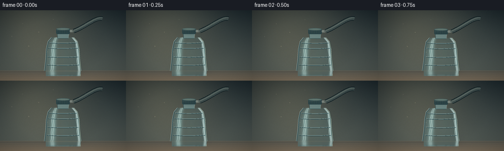
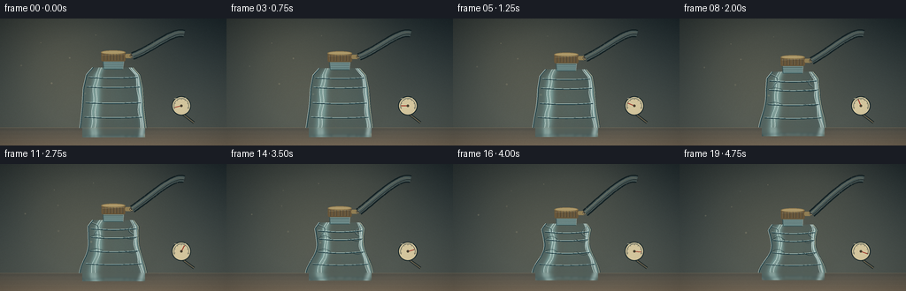
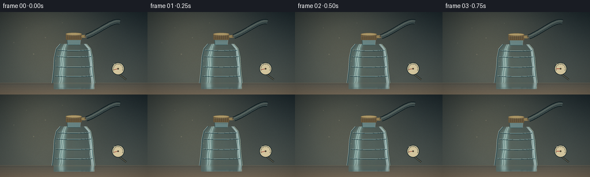
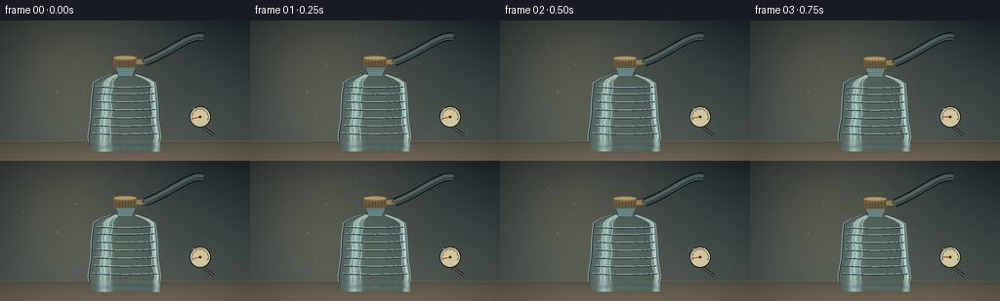
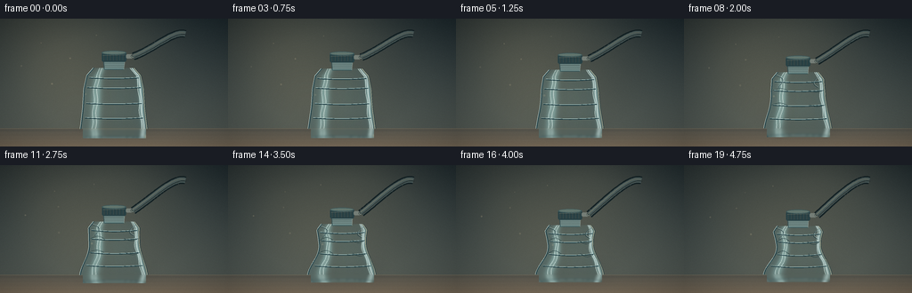
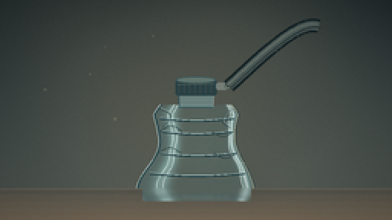
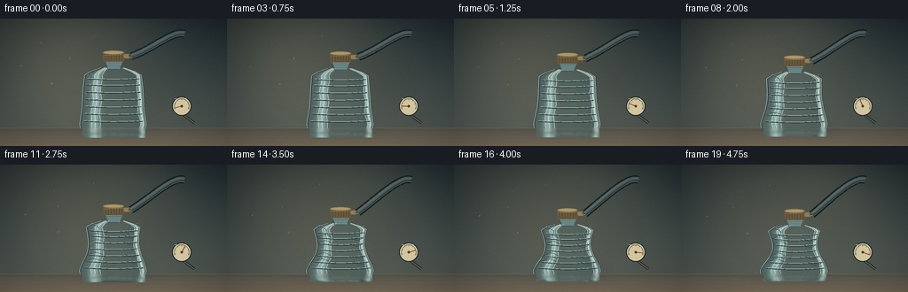
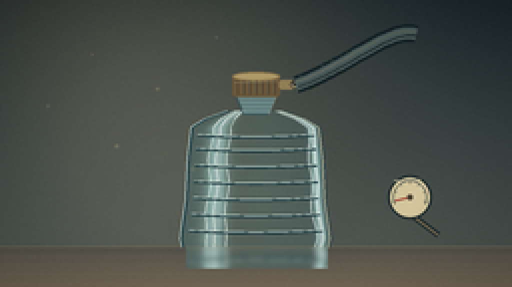
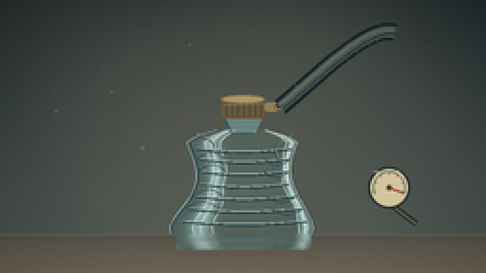

CODING AGENTS AS PIXEL WORLD MODELS
traex/DeepSeek-V4.1-Flash · mechanics_0023
点击播放 · 原生 RGB 像素
逐轮保存的候选
回放视频、检查图与代码变化。
每份候选均可单独播放。实际图片检查记录在下方工具轨迹中。
候选 01播放与检查图
点击播放 · 原生 RGB 像素


展开代码变化
--- 上一保存版本
+++ 本次保存版本
@@ -0,0 +1,437 @@
+from __future__ import annotations
+
+import math
+from pathlib import Path
+
+import numpy as np
+from PIL import Image, ImageDraw, ImageFilter
+
+import artifact_io
+
+
+WIDTH = 256
+HEIGHT = 144
+FRAMES = 20
+FPS = 4
+SS = 4
+W = WIDTH * SS
+H = HEIGHT * SS
+
+
+def smoothstep(x: float) -> float:
+ x = min(1.0, max(0.0, x))
+ return x * x * (3.0 - 2.0 * x)
+
+
+def mix(a: tuple[float, ...], b: tuple[float, ...], t: float) -> tuple[float, ...]:
+ return tuple(a[i] + (b[i] - a[i]) * t for i in range(len(a)))
+
+
+def make_background(frame_index: int) -> Image.Image:
+ phase = frame_index / (FRAMES - 1)
+ yy, xx = np.mgrid[0:H, 0:W]
+ xn = xx / W
+ yn = yy / H
+
+ top = np.array([27, 39, 44], dtype=np.float32)
+ bottom = np.array([75, 83, 79], dtype=np.float32)
+ vertical = np.clip(yn / 0.86, 0.0, 1.0)[..., None]
+ background = top + (bottom - top) * vertical
+
+ # A slow beam of warm studio light crosses the wall during the timelapse.
+ light_x = W * (0.36 + 0.20 * phase)
+ light_y = H * 0.12
+ radial = np.exp(-(((xx - light_x) / (W * 0.38)) ** 2 + ((yy - light_y) / (H * 0.72)) ** 2))
+ warm = np.array([190, 157, 104], dtype=np.float32)
+ background += radial[..., None] * warm * 0.18
+
+ # Broad diagonal shaft, softened before compositing.
+ shaft = np.zeros((H, W), dtype=np.uint8)
+ shaft_pil = Image.fromarray(shaft)
+ shaft_draw = ImageDraw.Draw(shaft_pil)
+ offset = int(W * (0.01 + 0.025 * phase))
+ shaft_draw.polygon(
+ [
+ (-W * 0.08 + offset, -20),
+ (W * 0.22 + offset, -20),
+ (W * 0.54 + offset, H * 0.80),
+ (W * 0.22 + offset, H * 0.80),
+ ],
+ fill=34,
+ )
+ shaft_pil = shaft_pil.filter(ImageFilter.GaussianBlur(26 * SS))
+ shaft_mask = np.asarray(shaft_pil, dtype=np.float32)[..., None] / 255.0
+ background = background * (1.0 - shaft_mask * 0.55) + np.array([224, 192, 134], dtype=np.float32) * shaft_mask * 0.55
+
+ # Table plane and its subtle perspective gradient.
+ table_y = int(123.5 * SS)
+ table = np.zeros_like(background)
+ table_y_norm = np.clip((yy - table_y) / max(1, H - table_y), 0.0, 1.0)
+ near = np.array([119, 106, 88], dtype=np.float32)
+ far = np.array([85, 84, 76], dtype=np.float32)
+ table[:] = far + (near - far) * table_y_norm[..., None]
+ background = np.where((yy >= table_y)[..., None], table, background)
+
+ # Soft contact shadow, narrow enough to keep the bottle base readable.
+ shadow = Image.new("L", (W, H), 0)
+ sd = ImageDraw.Draw(shadow)
+ shadow_scale = 1.0 - 0.12 * smoothstep(phase)
+ sd.ellipse(
+ (
+ int(W * 0.34),
+ int(H * 0.824),
+ int(W * 0.69),
+ int(H * (0.855 + 0.006 * shadow_scale)),
+ ),
+ fill=118,
+ )
+ sd.ellipse(
+ (
+ int(W * 0.39),
+ int(H * 0.840),
+ int(W * 0.64),
+ int(H * 0.864),
+ ),
+ fill=155,
+ )
+ shadow = shadow.filter(ImageFilter.GaussianBlur(9 * SS))
+ shadow_np = np.asarray(shadow, dtype=np.float32)[..., None] / 255.0
+ background *= 1.0 - shadow_np * 0.55
+
+ image = Image.fromarray(np.clip(background, 0, 255).astype(np.uint8), "RGB")
+
+ # Fine table texture and a restrained warm reflection at the horizon.
+ overlay = Image.new("RGBA", (W, H), (0, 0, 0, 0))
+ od = ImageDraw.Draw(overlay)
+ od.line((0, table_y, W, table_y), fill=(214, 186, 137, 55), width=max(1, SS // 2))
+ od.line((0, table_y + 2 * SS, W, table_y + 2 * SS), fill=(43, 49, 48, 55), width=SS)
+ for row in range(12):
+ y = table_y + int((row + 1) ** 1.35 * 2.15 * SS)
+ if y < H:
+ alpha = max(6, 18 - row)
+ od.line((0, y, W, y), fill=(230, 211, 177, alpha), width=1)
+ return Image.alpha_composite(image.convert("RGBA"), overlay).convert("RGB")
+
+
+def profile_width(s: float) -> float:
+ keys_s = np.array([0.0, 0.08, 0.34, 0.66, 0.88, 1.0])
+ keys_w = np.array([37.5, 36.7, 34.7, 33.4, 30.0, 22.8])
+ return float(np.interp(s, keys_s, keys_w))
+
+
+def bottle_geometry(p: float):
+ bottom_y = 124.0 - 0.8 * p
+ body_top_y = 55.5 + 13.0 * p
+ body_height = bottom_y - body_top_y
+ return bottom_y, body_top_y, body_height
+
+
+def body_edges(s: np.ndarray, p: float) -> tuple[np.ndarray, np.ndarray, np.ndarray]:
+ base = np.interp(
+ s,
+ np.array([0.0, 0.08, 0.34, 0.66, 0.88, 1.0]),
+ np.array([37.5, 36.7, 34.7, 33.4, 30.0, 22.8]),
+ )
+ pinch = 0.245 * p * np.sin(np.pi * np.clip(s, 0.0, 1.0)) ** 1.45
+ secondary = 0.055 * p * np.sin(2.0 * np.pi * s + 0.2)
+ width = base * (1.0 - pinch + secondary)
+ asym = 0.018 * p * np.sin(3.0 * np.pi * s + 0.35)
+ left_w = width * (1.0 + asym)
+ right_w = width * (1.0 - 0.7 * asym)
+ center = 128.0 + 1.15 * p * np.sin(np.pi * s) + 0.35 * p * np.sin(2.5 * np.pi * s)
+ return center, left_w, right_w
+
+
+def add_body(image: Image.Image, p: float, frame_index: int) -> tuple[Image.Image, float, float, float]:
+ bottom_y, body_top_y, _ = bottle_geometry(p)
+ bottom_h = bottom_y * SS
+ top_h = body_top_y * SS
+
+ body = np.zeros((H, W, 4), dtype=np.uint8)
+ ys = np.arange(int(math.floor(top_h)), int(math.ceil(bottom_h)) + 1)
+ s_all = (bottom_h - ys) / max(1.0, bottom_h - top_h)
+ centers, lefts, rights = body_edges(np.clip(s_all, 0.0, 1.0), p)
+
+ phase = frame_index / (FRAMES - 1)
+ for row, y in enumerate(ys):
+ s = float(s_all[row])
+ center = centers[row]
+ left_w = lefts[row]
+ right_w = rights[row]
+ x0 = int(math.floor((center - left_w) * SS))
+ x1 = int(math.ceil((center + right_w) * SS))
+ x0 = max(0, x0)
+ x1 = min(W - 1, x1)
+ if x1 <= x0:
+ continue
+ xs = np.arange(x0, x1 + 1, dtype=np.float32)
+ u = (xs - center * SS) / np.where(xs < center * SS, left_w * SS, right_w * SS)
+ au = np.abs(u)
+
+ edge_dark = 0.25 + 0.75 * np.clip(au, 0.0, 1.0) ** 3.2
+ broad_light = np.exp(-((u + 0.58 + 0.03 * phase) / 0.17) ** 2)
+ right_rim = np.exp(-((u - 0.88) / 0.065) ** 2)
+ center_glow = np.exp(-((u - 0.16) / 0.36) ** 2)
+
+ alpha = 24.0 + 62.0 * edge_dark + 62.0 * broad_light + 78.0 * right_rim + 10.0 * center_glow
+ alpha *= 0.72 + 0.28 * np.sin(np.pi * np.clip(s, 0, 1)) ** 0.4
+ color = np.zeros((len(xs), 3), dtype=np.float32)
+ color[:] = np.array([78, 128, 137], dtype=np.float32)
+ color += broad_light[:, None] * np.array([102, 127, 126], dtype=np.float32)
+ color += right_rim[:, None] * np.array([142, 154, 143], dtype=np.float32)
+ color += (1.0 - edge_dark)[:, None] * np.array([28, 28, 18], dtype=np.float32)
+ color = np.clip(color, 0, 255)
+ body[y, x0 : x1 + 1, :3] = color.astype(np.uint8)
+ body[y, x0 : x1 + 1, 3] = np.clip(alpha, 0, 185).astype(np.uint8)
+
+ body_layer = Image.fromarray(body, "RGBA")
+ image = Image.alpha_composite(image.convert("RGBA"), body_layer)
+ draw = ImageDraw.Draw(image, "RGBA")
+
+ # Refraction streaks: narrow, broken highlights rather than a flat glass tint.
+ for band_u, strength in [(-0.67, 78), (-0.56, 42), (0.82, 105), (0.90, 45)]:
+ points = []
+ for yy in range(int(top_h), int(bottom_h) + 1, 2):
+ ss = (bottom_h - yy) / max(1.0, bottom_h - top_h)
+ cc, ll, rr = body_edges(np.array([np.clip(ss, 0, 1)]), p)
+ width = ll[0] if band_u < 0 else rr[0]
+ xx = (cc[0] + band_u * width) * SS
+ xx += math.sin(ss * 17.0 + frame_index * 0.17) * 0.8 * SS
+ points.append((xx, yy))
+ if len(points) > 1:
+ draw.line(points, fill=(221, 237, 231, strength), width=max(1, SS // 2))
+
+ # Molded horizontal ribs and new vacuum creases.
+ rib_positions = [0.18, 0.42, 0.68, 0.84]
+ for idx, rib_s in enumerate(rib_positions):
+ y_base = bottom_h - rib_s * (bottom_h - top_h)
+ cc, ll, rr = body_edges(np.array([rib_s]), p)
+ width = (ll[0] + rr[0]) * 0.5
+ pts_dark = []
+ pts_light = []
+ for uu in np.linspace(-0.93, 0.93, 28):
+ xx = (cc[0] + uu * width * 0.97) * SS
+ sag = (1.0 - uu * uu) * (1.15 + 0.85 * p) * SS
+ pts_dark.append((xx, y_base + sag))
+ pts_light.append((xx, y_base + sag - 0.65 * SS))
+ crease_alpha = int(58 + 45 * p)
+ draw.line(pts_dark, fill=(25, 54, 61, crease_alpha), width=max(1, SS))
+ draw.line(pts_light, fill=(203, 230, 224, int(48 + 20 * p)), width=max(1, SS // 2))
+
+ if p > 0.30 and idx in (1, 2):
+ spread = 1.4 + 2.2 * p
+ for side in (-1, 1):
+ curve = []
+ for k in np.linspace(0, 1, 20):
+ uu = side * (0.95 - 0.55 * k)
+ xx = (cc[0] + uu * width) * SS
+ yy = y_base + side * spread * math.sin(math.pi * k) * SS
+ curve.append((xx, yy))
+ draw.line(curve, fill=(34, 59, 62, int(50 + 65 * p)), width=max(1, SS // 2))
+
+ # Shoulder folds become more pronounced as the bottle shortens.
+ if p > 0.18:
+ for side in (-1, 1):
+ pts = []
+ for k in np.linspace(0, 1, 18):
+ ss = 0.88 + 0.08 * k
+ cc, ll, rr = body_edges(np.array([ss]), p)
+ width = ll[0] if side < 0 else rr[0]
+ uu = side * (0.88 - 0.24 * math.sin(math.pi * k))
+ xx = (cc[0] + uu * width) * SS
+ yy = top_h + (0.05 + 0.22 * k + side * 0.025 * math.sin(math.pi * k)) * (bottom_h - top_h)
+ pts.append((xx, yy))
+ draw.line(pts, fill=(27, 51, 57, int(35 + 70 * p)), width=max(1, SS // 2))
+ draw.line([(x + 0.7 * SS, y - 0.5 * SS) for x, y in pts], fill=(195, 224, 220, 55), width=1)
+
+ # Body outline: cool shadow plus a selective warm edge from the studio light.
+ for side in (-1, 1):
+ pts = []
+ for yy in np.arange(top_h, bottom_h + 1, 2.0):
+ ss = (bottom_h - yy) / max(1.0, bottom_h - top_h)
+ cc, ll, rr = body_edges(np.array([np.clip(ss, 0, 1)]), p)
+ xx = (cc[0] + side * (ll[0] if side < 0 else rr[0])) * SS
+ pts.append((xx, yy))
+ draw.line(pts, fill=(31, 61, 68, 190), width=max(2, int(1.1 * SS)))
+ if side < 0:
+ draw.line([(x - 0.8 * SS, y) for x, y in pts], fill=(210, 230, 223, 85), width=max(1, SS // 2))
+ else:
+ draw.line([(x - 0.4 * SS, y) for x, y in pts], fill=(229, 213, 174, 72), width=max(1, SS // 2))
+
+ return image.convert("RGB"), bottom_y, body_top_y, 0.0
+
+
+def draw_neck_cap_hose(image: Image.Image, p: float, body_top_y: float) -> Image.Image:
+ layer = Image.new("RGBA", (W, H), (0, 0, 0, 0))
+ d = ImageDraw.Draw(layer)
+ center = 128.0
+ body_top_h = body_top_y * SS
+ _, _, top_w = body_edges(np.array([1.0]), p)
+ neck_bottom_w = float(top_w[0]) * 0.48
+ neck_top_w = 12.0 - 0.4 * p
+ neck_h = (8.0 - 1.0 * p) * SS
+ neck_top_h = body_top_h - neck_h
+ cx = center * SS
+
+ neck = [
+ (cx - neck_bottom_w * SS, body_top_h + 1.5 * SS),
+ (cx + neck_bottom_w * SS, body_top_h + 1.5 * SS),
+ (cx + neck_top_w * SS, neck_top_h),
+ (cx - neck_top_w * SS, neck_top_h),
+ ]
+ d.polygon(neck, fill=(145, 192, 195, 120))
+ d.line(neck[:2], fill=(50, 88, 94, 160), width=SS)
+ d.line([neck[3], neck[0]], fill=(44, 80, 88, 155), width=SS)
+ d.line([neck[2], neck[1]], fill=(206, 224, 215, 115), width=SS // 2)
+ for yy in np.linspace(neck_top_h + 2.4 * SS, body_top_h - 0.8 * SS, 3):
+ d.line(
+ (cx - neck_top_w * SS + SS, yy, cx + neck_top_w * SS - SS, yy + 0.2 * SS),
+ fill=(52, 84, 87, 115),
+ width=max(1, SS // 2),
+ )
+
+ cap_bottom = neck_top_h + 0.9 * SS
+ cap_h = 12.2 * SS
+ cap_top = cap_bottom - cap_h
+ cap_half = (neck_top_w + 1.8) * SS
+ cap_rect = (cx - cap_half, cap_top + 2 * SS, cx + cap_half, cap_bottom)
+ d.rounded_rectangle(cap_rect, radius=2.0 * SS, fill=(39, 64, 69, 245))
+ d.ellipse((cx - cap_half, cap_top, cx + cap_half, cap_top + 4.5 * SS), fill=(62, 89, 91, 255))
+ d.ellipse(
+ (cx - cap_half + 1.2 * SS, cap_top + 0.7 * SS, cx + cap_half - 1.2 * SS, cap_top + 3.6 * SS),
+ fill=(102, 125, 118, 210),
+ )
+ for ridge in np.linspace(-0.78, 0.78, 7):
+ x = cx + ridge * cap_half
+ d.line(
+ (x, cap_top + 4.2 * SS, x, cap_bottom - 1.0 * SS),
+ fill=(23, 46, 52, 150),
+ width=max(1, SS // 2),
+ )
+ d.line(
+ (x - 0.55 * SS, cap_top + 4.5 * SS, x - 0.55 * SS, cap_bottom - 1.4 * SS),
+ fill=(119, 142, 133, 50),
+ width=1,
+ )
+ d.line(
+ (cx - cap_half + 1.5 * SS, cap_top + 5.2 * SS, cx + cap_half - 1.5 * SS, cap_top + 4.4 * SS),
+ fill=(197, 211, 188, 85),
+ width=max(1, SS // 2),
+ )
+
+ # A small sealed valve nozzle on the cap feeds the vacuum hose.
+ nozzle_y = cap_top + 6.2 * SS
+ nozzle_x0 = cx + cap_half - 0.4 * SS
+ nozzle_x1 = nozzle_x0 + 7.5 * SS
+ d.rounded_rectangle(
+ (nozzle_x0, nozzle_y - 2.3 * SS, nozzle_x1, nozzle_y + 2.3 * SS),
+ radius=1.5 * SS,
+ fill=(117, 126, 119, 255),
+ )
+ d.ellipse(
+ (nozzle_x1 - 2.0 * SS, nozzle_y - 2.0 * SS, nozzle_x1 + 2.2 * SS, nozzle_y + 2.0 * SS),
+ fill=(64, 76, 75, 255),
+ )
+ d.arc(
+ (nozzle_x1 - 1.3 * SS, nozzle_y - 1.3 * SS, nozzle_x1 + 1.5 * SS, nozzle_y + 1.5 * SS),
+ 30,
+ 210,
+ fill=(178, 190, 170, 190),
+ width=max(1, SS // 2),
+ )
+
+ # Flexible vacuum line, drawn as a cubic Bezier and leaving the frame.
+ start = np.array([nozzle_x1 + 1.0 * SS, nozzle_y], dtype=np.float32)
+ end = np.array([208.0 * SS, 17.0 * SS], dtype=np.float32)
+ c1 = np.array([(173.0 + 0.8 * math.sin(p * math.pi)) * SS, (34.0 + 1.2 * p) * SS])
+ c2 = np.array([195.0 * SS, 13.0 * SS])
+ pts = []
+ for t in np.linspace(0.0, 1.0, 45):
+ q = (
+ (1 - t) ** 3 * start
+ + 3 * (1 - t) ** 2 * t * c1
+ + 3 * (1 - t) * t**2 * c2
+ + t**3 * end
+ )
+ pts.append((float(q[0]), float(q[1])))
+ d.line(pts, fill=(20, 33, 36, 255), width=9 * SS, joint="curve")
+ d.line(pts, fill=(73, 89, 88, 255), width=6 * SS, joint="curve")
+ d.line([(x - 0.8 * SS, y - 1.0 * SS) for x, y in pts], fill=(154, 162, 143, 105), width=max(1, SS))
+ d.line([(x + 1.2 * SS, y + 1.0 * SS) for x, y in pts], fill=(26, 39, 41, 135), width=max(1, SS))
+
+ image = Image.alpha_composite(image.convert("RGBA"), layer)
+ return image.convert("RGB")
+
+
+def add_finishing(image: Image.Image, frame_index: int, p: float) -> Image.Image:
+ overlay = Image.new("RGBA", (W, H), (0, 0, 0, 0))
+ d = ImageDraw.Draw(overlay)
+ phase = frame_index / (FRAMES - 1)
+
+ # Small dust motes give the light shaft a quiet sense of elapsed time.
+ motes = [
+ (0.18, 0.19, 2.0),
+ (0.30, 0.31, -1.4),
+ (0.23, 0.51, 1.2),
+ (0.43, 0.13, -0.9),
+ (0.09, 0.37, 0.7),
+ (0.37, 0.59, 1.5),
+ ]
+ for idx, (mx, my, speed) in enumerate(motes):
+ x = (mx * W + phase * speed * 12 * SS + math.sin(idx * 1.7 + phase * 4) * 2 * SS) % W
+ y = (my * H + phase * (3.5 + idx * 0.45) * SS) % (H * 0.80)
+ radius = (0.55 + (idx % 3) * 0.25) * SS
+ alpha = int(24 + 22 * (0.5 + 0.5 * math.sin(idx + phase * 5)))
+ d.ellipse((x - radius, y - radius, x + radius, y + radius), fill=(232, 209, 165, alpha))
+
+ # A faint reflected body on the glossy table, strongest near the base.
+ bottom_y, body_top_y, _ = bottle_geometry(p)
+ reflection_height = int((bottom_y - body_top_y) * 0.16 * SS)
+ crop_top = int((bottom_y - 13) * SS)
+ crop = image.crop((int(93 * SS), crop_top, int(164 * SS), int(bottom_y * SS)))
+ reflection = crop.transpose(Image.Transpose.FLIP_TOP_BOTTOM).resize(
+ (crop.width, reflection_height), Image.Resampling.BILINEAR
+ )
+ reflection = reflection.filter(ImageFilter.GaussianBlur(1.2 * SS))
+ mask = Image.new("L", reflection.size, 0)
+ md = ImageDraw.Draw(mask)
+ for y in range(reflection_height):
+ fade = int(54 * (1.0 - y / max(1, reflection_height)) ** 1.4)
+ md.line((0, y, reflection.width, y), fill=fade)
+ overlay.alpha_composite(reflection.convert("RGBA"), (int(93 * SS), int(bottom_y * SS)))
+ overlay.putalpha(overlay.getchannel("A"))
+
+ # Gentle vignette and grain keep the synthetic edges from feeling sterile.
+ yy, xx = np.mgrid[0:H, 0:W]
+ xn = (xx - W * 0.5) / (W * 0.62)
+ yn = (yy - H * 0.50) / (H * 0.65)
+ vignette = np.clip((xn * xn + yn * yn - 0.35) * 0.22, 0.0, 0.22)
+ arr = np.asarray(image, dtype=np.float32)
+ arr *= (1.0 - vignette[..., None])
+ rng = np.random.default_rng(2407 + frame_index)
+ grain = rng.normal(0.0, 2.0, (H, W, 1))
+ arr = np.clip(arr + grain, 0, 255)
+ image = Image.fromarray(arr.astype(np.uint8), "RGB")
+ image = Image.alpha_composite(image.convert("RGBA"), overlay).convert("RGB")
+ return image.resize((WIDTH, HEIGHT), Image.Resampling.LANCZOS)
+
+
+def render_frame(frame_index: int) -> np.ndarray:
+ t = frame_index / (FRAMES - 1)
+ p = smoothstep(t)
+ image = make_background(frame_index)
+ image, bottom_y, body_top_y, _ = add_body(image, p, frame_index)
+ image = draw_neck_cap_hose(image, p, body_top_y)
+ image = add_finishing(image, frame_index, p)
+ return np.asarray(image, dtype=np.uint8)
+
+
+def main() -> None:
+ case_dir = Path(__file__).resolve().parent
+ frames = np.stack([render_frame(i) for i in range(FRAMES)])
+ artifact_io.save(frames, case_dir)
+ print(f"wrote {FRAMES} frames to {case_dir}")
+
+
+if __name__ == "__main__":
+ main()
候选 02播放与检查图
点击播放 · 原生 RGB 像素


展开代码变化
--- 上一保存版本
+++ 本次保存版本
@@ -173,13 +173,13 @@
right_rim = np.exp(-((u - 0.88) / 0.065) ** 2)
center_glow = np.exp(-((u - 0.16) / 0.36) ** 2)
- alpha = 24.0 + 62.0 * edge_dark + 62.0 * broad_light + 78.0 * right_rim + 10.0 * center_glow
+ alpha = 19.0 + 54.0 * edge_dark + 68.0 * broad_light + 78.0 * right_rim + 10.0 * center_glow
alpha *= 0.72 + 0.28 * np.sin(np.pi * np.clip(s, 0, 1)) ** 0.4
color = np.zeros((len(xs), 3), dtype=np.float32)
- color[:] = np.array([78, 128, 137], dtype=np.float32)
- color += broad_light[:, None] * np.array([102, 127, 126], dtype=np.float32)
- color += right_rim[:, None] * np.array([142, 154, 143], dtype=np.float32)
- color += (1.0 - edge_dark)[:, None] * np.array([28, 28, 18], dtype=np.float32)
+ color[:] = np.array([61, 119, 133], dtype=np.float32)
+ color += broad_light[:, None] * np.array([111, 139, 136], dtype=np.float32)
+ color += right_rim[:, None] * np.array([156, 171, 155], dtype=np.float32)
+ color += (1.0 - edge_dark)[:, None] * np.array([36, 34, 22], dtype=np.float32)
color = np.clip(color, 0, 255)
body[y, x0 : x1 + 1, :3] = color.astype(np.uint8)
body[y, x0 : x1 + 1, 3] = np.clip(alpha, 0, 185).astype(np.uint8)
@@ -279,7 +279,7 @@
(cx + neck_top_w * SS, neck_top_h),
(cx - neck_top_w * SS, neck_top_h),
]
- d.polygon(neck, fill=(145, 192, 195, 120))
+ d.polygon(neck, fill=(137, 188, 193, 132))
d.line(neck[:2], fill=(50, 88, 94, 160), width=SS)
d.line([neck[3], neck[0]], fill=(44, 80, 88, 155), width=SS)
d.line([neck[2], neck[1]], fill=(206, 224, 215, 115), width=SS // 2)
@@ -295,27 +295,27 @@
cap_top = cap_bottom - cap_h
cap_half = (neck_top_w + 1.8) * SS
cap_rect = (cx - cap_half, cap_top + 2 * SS, cx + cap_half, cap_bottom)
- d.rounded_rectangle(cap_rect, radius=2.0 * SS, fill=(39, 64, 69, 245))
- d.ellipse((cx - cap_half, cap_top, cx + cap_half, cap_top + 4.5 * SS), fill=(62, 89, 91, 255))
+ d.rounded_rectangle(cap_rect, radius=2.0 * SS, fill=(104, 86, 58, 255))
+ d.ellipse((cx - cap_half, cap_top, cx + cap_half, cap_top + 4.5 * SS), fill=(139, 117, 75, 255))
d.ellipse(
(cx - cap_half + 1.2 * SS, cap_top + 0.7 * SS, cx + cap_half - 1.2 * SS, cap_top + 3.6 * SS),
- fill=(102, 125, 118, 210),
+ fill=(184, 161, 109, 230),
)
for ridge in np.linspace(-0.78, 0.78, 7):
x = cx + ridge * cap_half
d.line(
(x, cap_top + 4.2 * SS, x, cap_bottom - 1.0 * SS),
- fill=(23, 46, 52, 150),
+ fill=(57, 48, 36, 180),
width=max(1, SS // 2),
)
d.line(
(x - 0.55 * SS, cap_top + 4.5 * SS, x - 0.55 * SS, cap_bottom - 1.4 * SS),
- fill=(119, 142, 133, 50),
+ fill=(226, 200, 143, 78),
width=1,
)
d.line(
(cx - cap_half + 1.5 * SS, cap_top + 5.2 * SS, cx + cap_half - 1.5 * SS, cap_top + 4.4 * SS),
- fill=(197, 211, 188, 85),
+ fill=(235, 216, 166, 140),
width=max(1, SS // 2),
)
@@ -326,17 +326,17 @@
d.rounded_rectangle(
(nozzle_x0, nozzle_y - 2.3 * SS, nozzle_x1, nozzle_y + 2.3 * SS),
radius=1.5 * SS,
- fill=(117, 126, 119, 255),
+ fill=(145, 126, 84, 255),
)
d.ellipse(
(nozzle_x1 - 2.0 * SS, nozzle_y - 2.0 * SS, nozzle_x1 + 2.2 * SS, nozzle_y + 2.0 * SS),
- fill=(64, 76, 75, 255),
+ fill=(57, 53, 44, 255),
)
d.arc(
(nozzle_x1 - 1.3 * SS, nozzle_y - 1.3 * SS, nozzle_x1 + 1.5 * SS, nozzle_y + 1.5 * SS),
30,
210,
- fill=(178, 190, 170, 190),
+ fill=(235, 214, 161, 220),
width=max(1, SS // 2),
)
@@ -363,6 +363,49 @@
return image.convert("RGB")
+def add_gauge(image: Image.Image, frame_index: int) -> Image.Image:
+ phase = frame_index / (FRAMES - 1)
+ layer = Image.new("RGBA", (W, H), (0, 0, 0, 0))
+ d = ImageDraw.Draw(layer)
+
+ # A small analog gauge on the back table makes the changing pressure explicit.
+ cx, cy = 205.0 * SS, 99.0 * SS
+ radius = 10.8 * SS
+ d.line((cx + 2 * SS, cy + radius - SS, cx + 14 * SS, cy + radius + 8 * SS), fill=(32, 43, 43, 255), width=3 * SS)
+ d.line((cx + 2 * SS, cy + radius - SS, cx + 14 * SS, cy + radius + 8 * SS), fill=(114, 104, 82, 255), width=SS)
+ d.ellipse((cx - radius, cy - radius, cx + radius, cy + radius), fill=(25, 39, 41, 255))
+ d.ellipse(
+ (cx - radius + SS, cy - radius + SS, cx + radius - SS, cy + radius - SS),
+ fill=(211, 197, 157, 255),
+ )
+ d.arc(
+ (cx - radius + 2.5 * SS, cy - radius + 2.5 * SS, cx + radius - 2.5 * SS, cy + radius - 2.5 * SS),
+ 155,
+ 385,
+ fill=(62, 72, 67, 255),
+ width=max(1, SS // 2),
+ )
+ for tick in range(7):
+ angle = math.radians(165 + tick * 35)
+ r0 = radius - 3.8 * SS
+ r1 = radius - (1.6 if tick in (0, 3, 6) else 2.6) * SS
+ d.line(
+ (cx + math.cos(angle) * r0, cy + math.sin(angle) * r0, cx + math.cos(angle) * r1, cy + math.sin(angle) * r1),
+ fill=(67, 72, 64, 230),
+ width=max(1, SS // 2),
+ )
+ needle_angle = math.radians(165 + 215 * smoothstep(phase))
+ d.line(
+ (cx, cy, cx + math.cos(needle_angle) * (radius - 3.2 * SS), cy + math.sin(needle_angle) * (radius - 3.2 * SS)),
+ fill=(157, 54, 41, 255),
+ width=max(1, SS),
+ )
+ d.ellipse((cx - 1.4 * SS, cy - 1.4 * SS, cx + 1.4 * SS, cy + 1.4 * SS), fill=(73, 64, 48, 255))
+ d.line((cx - radius + 3 * SS, cy - radius + 2.4 * SS, cx + 5 * SS, cy - radius + 1.7 * SS), fill=(255, 242, 195, 130), width=SS)
+ image = Image.alpha_composite(image.convert("RGBA"), layer)
+ return image.convert("RGB")
+
+
def add_finishing(image: Image.Image, frame_index: int, p: float) -> Image.Image:
overlay = Image.new("RGBA", (W, H), (0, 0, 0, 0))
d = ImageDraw.Draw(overlay)
@@ -422,6 +465,7 @@
image = make_background(frame_index)
image, bottom_y, body_top_y, _ = add_body(image, p, frame_index)
image = draw_neck_cap_hose(image, p, body_top_y)
+ image = add_gauge(image, frame_index)
image = add_finishing(image, frame_index, p)
return np.asarray(image, dtype=np.uint8)
候选 03播放与检查图
点击播放 · 原生 RGB 像素


展开代码变化
--- 上一保存版本
+++ 本次保存版本
@@ -129,12 +129,15 @@
def body_edges(s: np.ndarray, p: float) -> tuple[np.ndarray, np.ndarray, np.ndarray]:
base = np.interp(
s,
- np.array([0.0, 0.08, 0.34, 0.66, 0.88, 1.0]),
- np.array([37.5, 36.7, 34.7, 33.4, 30.0, 22.8]),
+ np.array([0.0, 0.06, 0.12, 0.34, 0.66, 0.88, 0.94, 1.0]),
+ np.array([36.4, 37.3, 36.9, 34.7, 33.6, 31.8, 25.0, 13.4]),
)
pinch = 0.245 * p * np.sin(np.pi * np.clip(s, 0.0, 1.0)) ** 1.45
secondary = 0.055 * p * np.sin(2.0 * np.pi * s + 0.2)
width = base * (1.0 - pinch + secondary)
+ # Vacuum collapse shortens the shoulder as well as the side walls.
+ shoulder_t = np.clip((s - 0.86) / 0.14, 0.0, 1.0)
+ width *= 1.0 - 0.045 * p * shoulder_t * shoulder_t * (3.0 - 2.0 * shoulder_t)
asym = 0.018 * p * np.sin(3.0 * np.pi * s + 0.35)
left_w = width * (1.0 + asym)
right_w = width * (1.0 - 0.7 * asym)
@@ -173,23 +176,23 @@
right_rim = np.exp(-((u - 0.88) / 0.065) ** 2)
center_glow = np.exp(-((u - 0.16) / 0.36) ** 2)
- alpha = 19.0 + 54.0 * edge_dark + 68.0 * broad_light + 78.0 * right_rim + 10.0 * center_glow
- alpha *= 0.72 + 0.28 * np.sin(np.pi * np.clip(s, 0, 1)) ** 0.4
+ alpha = 31.0 + 64.0 * edge_dark + 82.0 * broad_light + 92.0 * right_rim + 16.0 * center_glow
+ alpha *= 0.78 + 0.22 * np.sin(np.pi * np.clip(s, 0, 1)) ** 0.35
color = np.zeros((len(xs), 3), dtype=np.float32)
- color[:] = np.array([61, 119, 133], dtype=np.float32)
- color += broad_light[:, None] * np.array([111, 139, 136], dtype=np.float32)
- color += right_rim[:, None] * np.array([156, 171, 155], dtype=np.float32)
- color += (1.0 - edge_dark)[:, None] * np.array([36, 34, 22], dtype=np.float32)
+ color[:] = np.array([65, 108, 115], dtype=np.float32)
+ color += broad_light[:, None] * np.array([126, 151, 145], dtype=np.float32)
+ color += right_rim[:, None] * np.array([158, 177, 163], dtype=np.float32)
+ color += (1.0 - edge_dark)[:, None] * np.array([39, 40, 28], dtype=np.float32)
color = np.clip(color, 0, 255)
body[y, x0 : x1 + 1, :3] = color.astype(np.uint8)
- body[y, x0 : x1 + 1, 3] = np.clip(alpha, 0, 185).astype(np.uint8)
+ body[y, x0 : x1 + 1, 3] = np.clip(alpha, 0, 218).astype(np.uint8)
body_layer = Image.fromarray(body, "RGBA")
image = Image.alpha_composite(image.convert("RGBA"), body_layer)
draw = ImageDraw.Draw(image, "RGBA")
# Refraction streaks: narrow, broken highlights rather than a flat glass tint.
- for band_u, strength in [(-0.67, 78), (-0.56, 42), (0.82, 105), (0.90, 45)]:
+ for band_u, strength in [(-0.69, 106), (-0.58, 48), (-0.42, 34), (0.80, 122), (0.89, 55)]:
points = []
for yy in range(int(top_h), int(bottom_h) + 1, 2):
ss = (bottom_h - yy) / max(1.0, bottom_h - top_h)
@@ -199,10 +202,10 @@
xx += math.sin(ss * 17.0 + frame_index * 0.17) * 0.8 * SS
points.append((xx, yy))
if len(points) > 1:
- draw.line(points, fill=(221, 237, 231, strength), width=max(1, SS // 2))
+ draw.line(points, fill=(231, 244, 234, strength), width=max(1, SS // 2))
# Molded horizontal ribs and new vacuum creases.
- rib_positions = [0.18, 0.42, 0.68, 0.84]
+ rib_positions = [0.12, 0.24, 0.36, 0.48, 0.60, 0.72, 0.82]
for idx, rib_s in enumerate(rib_positions):
y_base = bottom_h - rib_s * (bottom_h - top_h)
cc, ll, rr = body_edges(np.array([rib_s]), p)
@@ -214,11 +217,11 @@
sag = (1.0 - uu * uu) * (1.15 + 0.85 * p) * SS
pts_dark.append((xx, y_base + sag))
pts_light.append((xx, y_base + sag - 0.65 * SS))
- crease_alpha = int(58 + 45 * p)
+ crease_alpha = int(44 + 54 * p)
draw.line(pts_dark, fill=(25, 54, 61, crease_alpha), width=max(1, SS))
- draw.line(pts_light, fill=(203, 230, 224, int(48 + 20 * p)), width=max(1, SS // 2))
-
- if p > 0.30 and idx in (1, 2):
+ draw.line(pts_light, fill=(219, 235, 223, int(62 + 26 * p)), width=max(1, SS // 2))
+
+ if p > 0.24 and idx in (1, 2, 4, 5):
spread = 1.4 + 2.2 * p
for side in (-1, 1):
curve = []
@@ -268,7 +271,7 @@
body_top_h = body_top_y * SS
_, _, top_w = body_edges(np.array([1.0]), p)
neck_bottom_w = float(top_w[0]) * 0.48
- neck_top_w = 12.0 - 0.4 * p
+ neck_top_w = 10.4 - 0.3 * p
neck_h = (8.0 - 1.0 * p) * SS
neck_top_h = body_top_h - neck_h
cx = center * SS
@@ -293,7 +296,7 @@
cap_bottom = neck_top_h + 0.9 * SS
cap_h = 12.2 * SS
cap_top = cap_bottom - cap_h
- cap_half = (neck_top_w + 1.8) * SS
+ cap_half = (neck_top_w + 1.6) * SS
cap_rect = (cx - cap_half, cap_top + 2 * SS, cx + cap_half, cap_bottom)
d.rounded_rectangle(cap_rect, radius=2.0 * SS, fill=(104, 86, 58, 255))
d.ellipse((cx - cap_half, cap_top, cx + cap_half, cap_top + 4.5 * SS), fill=(139, 117, 75, 255))
可观测工具轨迹
实际执行的命令与返回图片。
命令 1exit 0
/bin/bash -c "pwd && rg --files -g 'prompt.txt' -g 'GENERATION_RULES.md' -g 'task_spec.json' -g '"'!**/.git/**'"'"
命令 2exit 0
/bin/bash -c "ls -la && find . -maxdepth 2 -type f | sed 's#"'^./##'"' | sort | head -200"
命令 3exit 0
/bin/bash -c 'cat GENERATION_RULES.md'
命令 4exit 0
/bin/bash -c 'cat task_spec.json'
命令 5exit 0
/bin/bash -c 'cat prompt.txt'
命令 6exit 0
/bin/bash -c "sed -n '1,240p' artifact_io.py"
命令 7exit 0
/bin/bash -c 'python generate.py'
命令 8exit 0
/bin/bash -c "python - <<'PY'
from PIL import Image
import numpy as np
for name in ['inspection.png','transition_check.png','frames/00.png','frames/10.png','frames/19.png']:
im=Image.open(name).convert('RGB')
a=np.asarray(im)
print(name, im.size, 'mean', a.mean(axis=(0,1)).round(1), 'std', a.std(axis=(0,1)).round(1))
PY"命令 9exit 0
/bin/bash -c "python - <<'PY'
from PIL import Image
for i in [0,3,6,9,12,15,18,19]:
im=Image.open(f'frames/{i:02d}.png')
im.resize((768,432), Image.Resampling.NEAREST).save(f'.tmp/detail_{i:02d}.png')
PY"命令 10exit 0
/bin/bash -c 'cp -a frames .tmp/candidate_v1_frames && cp -a inspection.png .tmp/candidate_v1_inspection.png && cp -a transition_check.png .tmp/candidate_v1_transition.png'
命令 11exit 0
/bin/bash -c 'python generate.py'
命令 12exit 0
/bin/bash -c 'cp -a frames .tmp/candidate_v2_frames && cp -a inspection.png .tmp/candidate_v2_inspection.png'
命令 13exit 1
/bin/bash -c 'python generate.py'
命令 14exit 0
/bin/bash -c 'python generate.py'
命令 15exit 0
/bin/bash -c "python - <<'PY'
from PIL import Image
for i in [0,5,10,15,19]:
im=Image.open(f'frames/{i:02d}.png')
im.resize((1024,576), Image.Resampling.NEAREST).save(f'.tmp/v3_detail_{i:02d}.png')
PY"命令 16exit 0
/bin/bash -c "python -m py_compile generate.py && python - <<'PY'
from pathlib import Path
from PIL import Image
import numpy as np
n=20
shapes=[]
means=[]
for i in range(n):
a=np.asarray(Image.open(f'frames/{i:02d}.png').convert('RGB'))
shapes.append(a.shape)
means.append(a.mean(axis=(0,1)))
d=[float(np.mean(np.abs(np.asarray(Image.open(f'frames/{i:02d}.png'),dtype=np.int16)-np.asarray(Image.open(f'frames/{i-1:02d}.png'),dtype=np.int16)))) for i in range(1,n)]
print('frame shapes unique:', sorted(set(shapes)))
print('mean RGB first/last:', means[0].round(2), means[-1].round(2))
print('adjacent mean abs diff min/max:', round(min(d),2), round(max(d),2))
print('adjacent diffs:', ' '.join(f'{x:.2f}' for x in d))
for f in ['pixels.npz','index.html','inspection.png','transition_check.png','generate.py']:
p=Path(f); print(f, p.exists(), p.stat().st_size)
PY"命令 17exit 0
/bin/bash -c "python - <<'PY'
from pathlib import Path
import hashlib, numpy as np
h1=hashlib.sha256(Path('pixels.npz').read_bytes()).hexdigest()
z=np.load('pixels.npz')['pixels']
print('packed', z.shape, z.dtype, 'unique colors', len(np.unique(z)))
print('sha256', h1)
PY"命令 18exit 1
/bin/bash -c "python generate.py >/tmp/pixelworld_generate.log 2>&1 && python - <<'PY'
from pathlib import Path
import hashlib
print(hashlib.sha256(Path('pixels.npz').read_bytes()).hexdigest())
PY
cat /tmp/pixelworld_generate.log"命令 19exit 0
/bin/bash -c "python generate.py > .tmp/generate.log 2>&1 && python - <<'PY'
from pathlib import Path
import hashlib
print(hashlib.sha256(Path('pixels.npz').read_bytes()).hexdigest())
PY
tail -5 .tmp/generate.log"视觉工具实际返回图片 1

视觉工具实际返回图片 2

视觉工具实际返回图片 3

视觉工具实际返回图片 4

视觉工具实际返回图片 5

视觉工具实际返回图片 6

保存候选 3 份；完成命令 19 次；可验证图片返回 6 张。原始 API 响应与完整日志保留在本地。